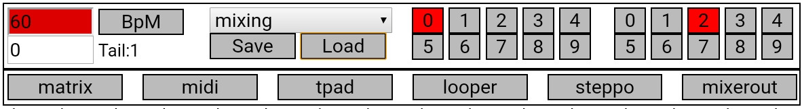

Matrix Processor Manual
This is a multieffect processor created for Csound For Android.
The GUI is made with Html and Javascript. Midi messages are received through web midi api in the GUI code.
Developed by Triceratupuz Lab
Index
Before Using
- The files and directories must be placed (preserving folder structures) in a directory
where user has access and files manipulation permissions.
- Change the --omacro:GSCURDIR=/absolute/path/to/file/mat_proc_tpz/dot/csd/ in CsOptions
- Change the --env:INCRIR+=/absolute/path/to/include/directory in CsOptions
Back to index

This piece is always fixed on top.
- Top left number and BpM button allows to set the global BpM.
Button can be used as tap tempo, number flashes at tempo.
- Bottom left number set the tail time when changing presets,
Tails shows how many presets are running (in case of longer tail times).
- Drop down menu allow to select mixing (just audio manipulation) and recording
(the audio is recorded in a wav file in the same directory of the csd file).
- Left numbered buttons (0-9) are to select bank number (each bank has 10 matrix presets).
- Left numbered buttons (0-9) are to select presets number.
- Save button save the current matrix preset in the bank/preset selected.
- Load button load the matrix preset selected.
- matrix, midi, tpad and looper buttons change visible page.
Back to index
Matrix Page
In this page effects are selected, setted and connected. Each column represents a channel (effect).
- in slider is the volume from mic/line in/dac
- 1 to 8 sliders are the volume of the 8 channels in the matrix to be used as input of this effect/column
- Dropdown menu allow to select the effect used in this column
- depending on the effect selected the 4 horizontal sliders chenge the name to the corresponding parameter
(or nothing if not used in the particular effect)
- pan slider place the output of the effect in the stereo field
- m vertical slider is how much volume of the effect output will be used in the matrix (with the 1-8 channel sliders)
- o vertical slider is the output volume of the effect
Back to index
Midi Page
8 matrix parameters can be controlled by midi Control Changes.
- Dropdown menu is to select which matrix parameter must be controlled
- CC is the control change number that should be used
- min is the value of the parameter (in range 0.0-1.0) when CC value is 0
- max is the value of the parameter (in range 0.0-1.0) when CC value is 127
The rest of the page has:
- list of midi controls (program chenges and Control chenges) hardcoded in the program
- a midi monitor that displays incoming midi messages
Back to index
Trackpad page
4 matrix parameters can be controlled by moving a finger on the trackpad.
- top dropdown select the parameter to be controlled
- other dropdown select the pad axis to be mapped as control
- min is the value of the parameter (in range 0.0-1.0) when finger is in the axis min area
- max is the value of the parameter (in range 0.0-1.0) when finger is in the axis max area
Back to index
Looper Page
In this page there are 4 loopers, 3 freezers and the output mixer
Loopers
- looper can be: OFF (completely deactivated), man (can record play using the Play/rec button),
autoend (started with Play/rec button and stops recoding/loop after the time selected),
thrStart (start recording when audio volume cross the threshold set with Thr vertical slider),
thrStertautoend (start recording when audio volume cross the threshold set with Thr vertical slider
and stops recoding/loop after the time selected)
- P0 button bring loop reproduction at the beginning
- Kill button cancel the portion of the loop as long as it is pressed
- from matrix dropdown menu is to lect the source to be recorder for the loop
- sec/beat dropdown menu select the unit of measure for the loop duration
(seconds or beats relative to BpM set in the Header)
- T= buttons is to copy the duration of loop from the other loopers
- 1 dropdown menu select the speed of the loop
- the horizontal slider is another way to change the speed of the loop>
- to 1 button reset the slider to change de speed
- fPitch button preserve the original pitch regardless the speed changes in the loop
- reduce/amplify dropdown control if the rep slider is used to decrease or increase the loop volume at each repeat
- In slider is to set the volume for the input of the loop.
If using the Play/Rec button or the autotheshold function this slider is set internally to max (=1).
It can be used if looper is used as delay in man mode with lenght already selected.
- off/sin/tri/squ dropdown, pos/bi/neg dropdown, Amp(litude) slider, Fre(quency) slider and Off(set) slider can be
used to modulate loop speed/pitch.
- to matrix silder send the output of the looper to the input of the matrix
Freez(ers)
- dropdounmenu select the source signal to be freezed
- Rise Time set the fade in/fade out time for the freezed sounds
- to matrix silder send the output of the looper to the input of the matrix
Mixer
Mix the volume of the various parts.
Back to index